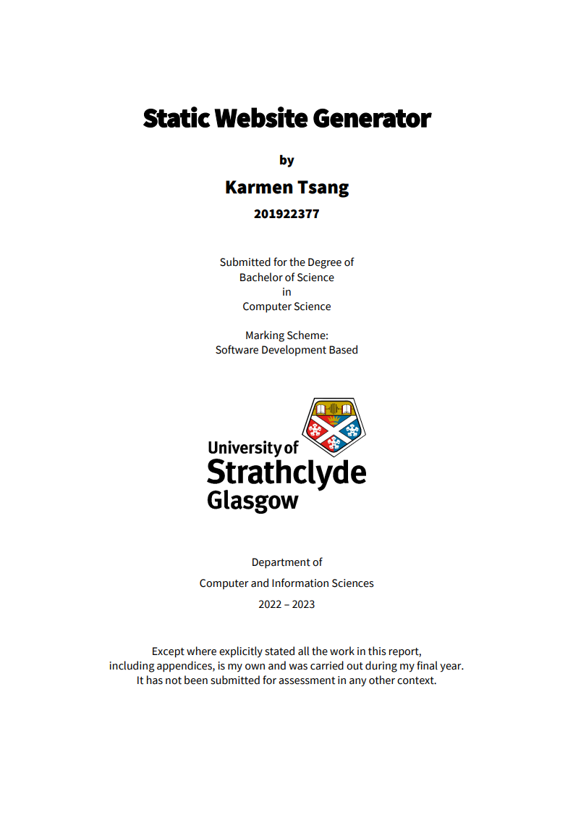

I used my Honours project to create this website?
For my honors project, I undertook the development of my own static site generator (SSG) using Python. Drawing upon my prior experience in web development during high school and university, I felt confident in my ability to build a generator from the ground up. The objective was to design a versatile tool capable of generating static websites from different formats such as Markdown, YAML, HTML, and CSS. Additionally, I incorporated dynamic features into the SSG and ensured its user-friendliness.
I realised an opportunity to utilise my skills and knowledge to create a website that would not only showcase my progression but also serve as a digital portfolio. I aim to demonstrate my growth, skills, and dedication to potential employers and collaborators, providing them with a comprehensive insight into my capabilities and achievements.
Here is the front cover of my dissertation.
